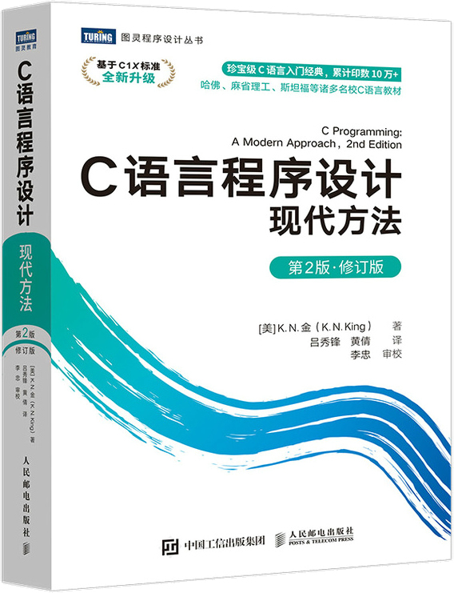

首页 > 书籍下载
《C语言程序设计(现代方法)》第2版PDF下载（高清完整版）
|  | 作者：[美]K.N.金（K.N.King） |
| 译者：吕秀锋、黄倩 | |
| 出版时间：2021年07月01日 | |
| 出版社：人民邮电出版社 | |
| 书号ISBN：9787115565198 | |
| 总页数：696 |
这是一本经典的 C 语言入门书籍，被多所大学作为课堂教材，已经累计销售 10W 多册，豆瓣评分高达 9.3 分。
这里提供的是《C语言程序设计(现代方法)》第 2 版的高清 PDF 下载，内容完整，附带目录标签。
和其它 C 语言书籍相比，这本书最大的优势是讲解了 C 语言几乎所有的特性，囊括 C89、C99、C11 和 C18 标准，内容足够新、足够全面。
这本书赢得了很多读者的好评，比如一位学生家长给出的评价：
孩子今年考上大学并就读软件工程专业，看了很多视频，推荐这套书，想在暑假期间自学一些计算机方面的知识，感觉这本书籍讲述很清晰。
下面是一位已经工作了的读者给出的评价：有帮助的一本书，在大学时候看过，工作后可以当做工具书始用的，推荐，这本写的很全。
书籍目录
- 第1章 C语言概述 1
- 1.1 C语言的历史 1
- 1.2 C语言的优缺点 3
- 问与答 5
- 第2章 C语言基本概念 7
- 2.1 编写一个简单的C程序 7
- 2.2 简单程序的一般形式 9
- 2.3 注释 11
- 2.4 变量和赋值 13
- 2.5 读入输入 17
- 2.6 定义常量的名字 18
- 2.7 标识符 19
- 2.8 C 程序的书写规范 21
- 问与答 23
- 练习题 25
- 编程题 26
- 第3章 格式化输入/输出 28
- 3.1 printf函数 28
- 3.2 scanf函数 31
- 问与答 35
- 练习题 37
- 编程题 38
- 第4章 表达式 40
- 4.1 算术运算符 40
- 4.2 赋值运算符 44
- 4.3 自增运算符和自减运算符 46
- 4.4 表达式求值 47
- 4.5 表达式语句 50
- 问与答 50
- 练习题 52
- 编程题 54
- 第5章 选择语句 56
- 5.1 逻辑表达式 56
- 5.2 if语句 58
- 5.3 switch语句 66
- 问与答 69
- 练习题 72
- 编程题 74
- 第6章 循环 77
- 6.1 while语句 77
- 6.2 do语句 80
- 6.3 for语句 82
- 6.4 退出循环 86
- 6.5 空语句 90
- 问与答 92
- 练习题 94
- 编程题 95
- 第7章 基本类型 97
- 7.1 整数类型 97
- 7.2 浮点类型 102
- 7.3 字符类型 104
- 7.4 类型转换 110
- 7.5 类型定义 115
- 7.6 sizeof运算符 117
- 问与答 117
- 练习题 120
- 编程题 121
- 第8章 数组 124
- 8.1 一维数组 124
- 8.2 多维数组 130
- 8.3 C99 中的变长数组 134
- 问与答 135
- 练习题 136
- 编程题 138
- 第9章 函数 141
- 9.1 函数的定义和调用 141
- 9.2 函数声明 147
- 9.3 实际参数 149
- 9.4 return语句 155
- 9.5 程序终止 156
- 9.6 递归 157
- 9.7 泛型选择 161
- 问与答 163
- 练习题 166
- 编程题 169
- 第10章 程序结构 171
- 10.1 局部变量 171
- 10.2 外部变量 172
- 10.3 程序块 177
- 10.4 作用域 178
- 10.5 构建C程序 179
- 问与答 185
- 练习题 185
- 编程题 186
- 第11章 指针 188
- 11.1 指针变量 188
- 11.2 取地址运算符和间接寻址运算符 189
- 11.3 指针赋值 191
- 11.4 指针作为参数 192
- 11.5 指针作为返回值 195
- 问与答 196
- 练习题 198
- 编程题 199
- 第12章 指针和数组 201
- 12.1 指针的算术运算 201
- 12.2 指针用于数组处理 204
- 12.3 用数组名作为指针 206
- 12.4 指针和多维数组 209
- 12.5 C99中的指针和变长数组 211
- 问与答 212
- 练习题 213
- 编程题 215
- 第13章 字符串 217
- 13.1 字面串 217
- 13.2 字符串变量 220
- 13.3 字符串的读和写 222
- 13.4 访问字符串中的字符 225
- 13.5 使用C语言的字符串库 226
- 13.6 字符串惯用法 231
- 13.7 字符串数组 235
- 问与答 238
- 练习题 241
- 编程题 243
- 第14章 预处理器 246
- 14.1 预处理器的工作原理 246
- 14.2 预处理指令 248
- 14.3 宏定义 248
- 14.4 条件编译 260
- 14.5 其他指令 263
- 问与答 266
- 练习题 268
- 第15章 编写大型程序 272
- 15.1 源文件 272
- 15.2 头文件 273
- 15.3 把程序划分成多个文件 279
- 15.4 构建多文件程序 285
- 问与答 289
- 练习题 291
- 编程题 292
- 第16章 结构、联合和枚举 293
- 16.1 结构变量 293
- 16.2 结构类型 296
- 16.3 嵌套的数组和结构 301
- 16.4 联合 309
- 16.5 枚举 314
- 问与答 316
- 练习题 318
- 编程题 323
- 第17章 指针的高级应用 324
- 17.1 动态存储分配 324
- 17.2 动态分配字符串 326
- 17.3 动态分配数组 329
- 17.4 释放存储空间 331
- 17.5 链表 332
- 17.6 指向指针的指针 344
- 17.7 指向函数的指针 345
- 17.8 受限指针 350
- 17.9 弹性数组成员 351
- 问与答 352
- 练习题 355
- 编程题 358
- 第18章 声明 359
- 18.1 声明的语法 359
- 18.2 存储类型 360
- 18.3 类型限定符 366
- 18.4 声明符 366
- 18.5 初始化器 369
- 18.6 内联函数 371
- 18.7 函数指定符_Noreturn和头 373
- 18.8 静态断言 373
- 问与答 374
- 练习题 377
- 第19章 程序设计 379
- 19.1 模块 379
- 19.2 信息隐藏 381
- 19.3 抽象数据类型 385
- 19.4 栈抽象数据类型 386
- 19.5 抽象数据类型的设计问题 394
- 问与答 395
- 练习题 396
- 编程题 397
- 第20章 底层程序设计 398
- 20.1 位运算符 398
- 20.2 结构中的位域 403
- 20.3 其他底层技术 405
- 20.4 对象的对齐 410
- 问与答 411
- 练习题 411
- 编程题 413
- 第21章 标准库 414
- 21.1 标准库的使用 414
- 21.2 C89标准库概述 416
- 21.3 C99标准库更新 417
- 21.4 ：常用定义 418
- 21.5 ：布尔类型和值 419
- 21.6 C11标准库更新 419
- 21.7 ：地址的对齐 420
- 21.8 ：宏noreturn的定义 420
- 问与答 420
- 练习题 421
- 编程题 422
- 第22章 输入/输出 423
- 22.1 流 423
- 22.2 文件操作 426
- 22.3 格式化的输入/输出 433
- 22.4 字符的输入/输出 444
- 22.5 行的输入/输出 446
- 22.6 块的输入/输出 447
- 22.7 文件定位 448
- 22.8 字符串的输入/输出 451
- 问与答 452
- 练习题 455
- 编程题 458
- 第23章 库对数值和字符数据的支持 462
- 23.1 ：浮点类型的特性 462
- 23.2 ：整数类型的大小 464
- 23.3 ：数学计算（C89） 465
- 23.4 ：数学计算 468
- 23.5 ：字符处理 479
- 23.6 ：字符串处理 482
- 问与答 488
- 练习题 488
- 编程题 490
- 第24章 错误处理 491
- 24.1 ：诊断 491
- 24.2 ：错误 492
- 24.3 ：信号处理 494
- 24.4 ：非局部跳转 497
- 问与答 499
- 练习题 500
- 第25章 国际化特性 502
- 25.1 ：本地化 502
- 25.2 多字节字符和宽字符 507
- 25.3 双联符和三联符 512
- 25.4 通用字符名 514
- 25.5 ：扩展的多字节和宽字符实用工具 514
- 25.6 ：宽字符分类和映射实用工具 523
- 25.7 ：改进的Unicode支持 526
- 问与答 528
- 练习题 529
- 编程题 530
- 第26章 其他库函数 531
- 26.1 ：可变参数 531
- 26.2 ：通用的实用工具 534
- 26.3 ：日期和时间 542
- 问与答 550
- 练习题 552
- 编程题 553
- 第27章 C99对数学计算的新增支持 554
- 27.1 ：整数类型 554
- 27.2 ：整数类型的格式转换 557
- 27.3 复数 559
- 27.4 ：复数算术运算 562
- 27.5 ：泛型数学 567
- 27.6 ：浮点环境 570
- 问与答 573
- 练习题 574
- 编程题 575
- 第28章 C1X新增的多线程和原子操作支持 576
- 28.1 ：多线程执行支持 577
- 28.2 _Atomic、：原子类型和原子操作支持 599
- 问与答 619
- 练习题 619
- 编程题 620
- 附录
- 附录A C语言运算符 621
- 附录B C1X与C99的比较 622
- 附录C C99与C89的比较 624
- 附录D C89与经典C的比较 628
- 附录E 标准库函数 631
- 附录F ASCII字符集 673
书籍下载
一键登录，免费下载完整版 PDF，文件名称：《C语言程序设计(现代方法)》第2版.pdf